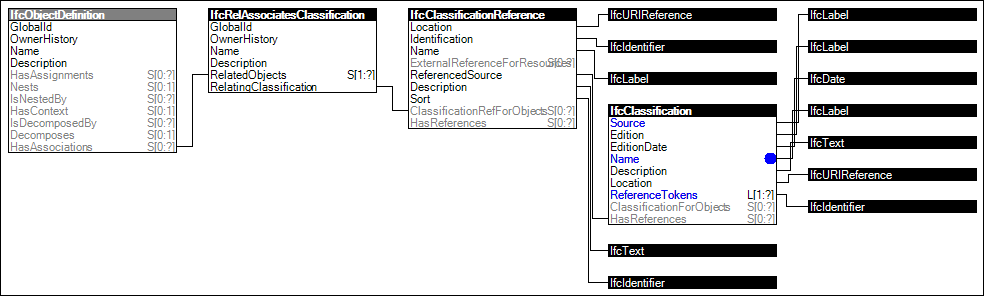

Link to this page
Link to this pageThe concept Classification Association describes how objects and object types can be further described by associating references to external sources of information. The source of information can be:
An individual item within the external source of information can be selected. It then applies the inherent meaning of the item to the IfcObject or IfcTypeObject.
NOTE The classification system or dictionary server that is used within the project itself can also be indicated at the level of IfcProject or IfcProjectLibrary either as an external source, or copied with all relevant classification items into the project data. Use the concept Project Classification Information to utilize this functionality.
Figure 18 illustrates an instance diagram.
 |
Figure 18 — Classification Association |